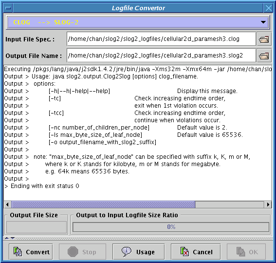

|

|
If a non-slog2 file is selected in the Main window, the Logfile Convertor as shown in Figure 3.2 will be invoked to prompt user to convert the file to SLOG-2 format readable by this viewer. There are currently 3 supported convertors: CLOG -> SLOG-2, RLOG -> SLOG-2 and UTE -> SLOG-2. Convertor is generally selected based on the input file's file extension. In the case that wrong file convertor is selected, user can correct it through the pale blue pulldown menu located at the top of the window. The Logfile Convertor window can also be invoked by directly clicking on the Logfile Conversion button shown in the Table 3.2. The text field of the Output File Name usually displays the default slog2 filename recommended by the convertor based on the text field in the Input File Specification. If the text field does not display the default name as expected, hitting return key in the Input File Specification field will force the update of the Output File Name field with the default name. There are 4 major functions of the Logfile convertor and each of them is associated with a button in the lower panel of the window. They are listed in the Table 3.4.
|
Since the Logfile Convertor launches a separate java process to do the logfile conversion, it requires certain parameters to launch the process correctly. All the parameters that are needed by any logfile convertor are supplied through a panel hidden by a splitter in the convertor window. The splitter has a divider which can be lifted up to display all the parameters used to launch the java process as in the Figure 3.4. In the rare occasion that the default parameters are not correct, the text fields can be modified to reflect the situation.
The standard output and error streams of the process are being piped to the text area located in the middle of the window as the process is running. The Output File Size field displays the current size of the slog2 file as it is being generated, also the progress bar will be incremented to show the current ratio of the output to input file size as in the Figure 3.4. If the logfile conversion fails, the error message will be printed in the text area for diagnosis or bug report.